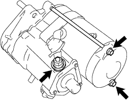
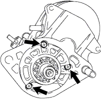
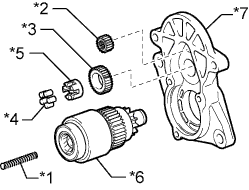
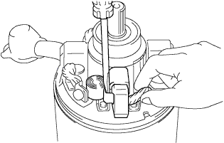
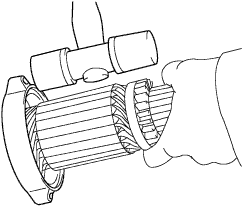

СТАРТЕР (для моделей мощностью 3,0 кВт) > РАЗБОРКА |
| 1. СНИМИТЕ СТАТОР СТАРТЕРА В СБОРЕ |
|  |
Отверните гайку и отсоедините вывод от контакта C.
Выверните 2 болта.
Вытяните статор стартера вместе с якорем из втягивающего реле стартера.
| 2. СНИМИТЕ ВТЯГИВАЮЩЕЕ РЕЛЕ СТАРТЕРА В СБОРЕ |
|  |
Выверните 3 болта и снимите втягивающее реле.
|  |
Извлеките из корпуса стартера возвратную пружину, ведущую шестерню, промежуточную шестерню, ролик муфты, фиксатор и пусковую муфту.
| *1 | Возвратная пружина |
| *2 | Ведущая шестерня (сателлит) |
| *3 | Промежуточная шестерня |
| *4 | Ролик муфты |
| *5 | Фиксатор |
| *6 | Пусковая муфта |
| *7 | Корпус стартера |
 |
С помощью магнитного захвата извлеките стальной шарик из отверстия вала муфты.
| *1 | Магнитный захват |
| 3. СНИМИТЕ ЩЕТКОДЕРЖАТЕЛЬ СТАРТЕРА В СБОРЕ |
|  |
Отсоедините 4 щетки статора стартера от щеткодержателя стартера.
С помощью отвертки оттяните пружину.
Отсоедините щетку от щеткодержателя стартера.
Снимите щеткодержатель стартера со статора стартера.
Снимите кольцевое уплотнение.
| 4. СНИМИТЕ ЯКОРЬ СТАРТЕРА В СБОРЕ |
Нанесите метки на статор стартера и раму со стороны коллектора.
Снимите якорь стартера вместе с рамой со стороны коллектора.
Снимите кольцевое уплотнение.
|  |
Обстучите концевую раму молотком с пластмассовым покрытием, чтобы снять якорь стартера с рамы со стороны коллектора.